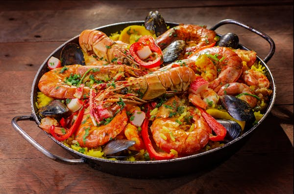

4 cangkir kaldu ayam, dipanaskan
1/4 cangkir minyak zaitun
1 bawang bombay, cincang halus
3 siung bawang putih, cincang halus
1 paprika merah, diiris tipis
1 paprika hijau, diiris tipis
2 tomat besar, diparut
1 sendok teh paprika asap (smoked paprika)
1/2 sendok teh kunyit (atau sejumput saffron)
1/2 cangkir kacang polong beku
200 gram udang, dikupas dan dibersihkan
200 gram kerang, dicuci bersih
200 gram ayam, potong dadu kecil
1 buah lemon, dipotong menjadi irisan
Peterseli segar untuk hiasan
Garam dan merica secukupnya
2. Masak Ayam dan Udang: Panaskan minyak zaitun di dalam wajan paella atau wajan besar. Masak ayam hingga berubah warna, angkat dan sisihkan. Tambahkan udang dan masak hingga berubah warna, angkat dan sisihkan.
3. Tumis Sayuran: Tambahkan bawang bombay, bawang putih, dan paprika ke dalam wajan. Tumis hingga lembut dan harum.
4. Tambahkan Tomat dan Bumbu: Tambahkan tomat parut, paprika asap, dan kunyit. Masak hingga tomat berubah menjadi saus yang kental.
5. Masak Nasi: Tambahkan nasi ke dalam wajan dan aduk hingga tercampur dengan saus. Ratakan nasi di dalam wajan.
6. Tambahkan Kaldu: Tuangkan kaldu ayam panas secara perlahan ke dalam wajan. Jangan diaduk. Biarkan nasi masak selama 15-20 menit hingga hampir semua cairan terserap.
7. Tambahkan Kacang Polong, Ayam, dan Udang: Sebar kacang polong, ayam, udang, dan kerang di atas nasi. Tutup wajan dengan foil atau penutup. Masak lagi selama 10-15 menit hingga semua bahan matang dan kerang terbuka.
8. Sajikan: Setelah matang, angkat dari api dan biarkan paella istirahat selama beberapa menit. Hiasi dengan irisan lemon dan peterseli segar sebelum disajikan.
paella
Bahan-bahan
2 cangkir nasi paella (atau nasi arborio)4 cangkir kaldu ayam, dipanaskan
1/4 cangkir minyak zaitun
1 bawang bombay, cincang halus
3 siung bawang putih, cincang halus
1 paprika merah, diiris tipis
1 paprika hijau, diiris tipis
2 tomat besar, diparut
1 sendok teh paprika asap (smoked paprika)
1/2 sendok teh kunyit (atau sejumput saffron)
1/2 cangkir kacang polong beku
200 gram udang, dikupas dan dibersihkan
200 gram kerang, dicuci bersih
200 gram ayam, potong dadu kecil
1 buah lemon, dipotong menjadi irisan
Peterseli segar untuk hiasan
Garam dan merica secukupnya
Instruksi
1. Persiapkan Semua Bahan: Pastikan semua bahan sudah siap sebelum memulai, karena paella memerlukan perhatian terus-menerus saat dimasak.2. Masak Ayam dan Udang: Panaskan minyak zaitun di dalam wajan paella atau wajan besar. Masak ayam hingga berubah warna, angkat dan sisihkan. Tambahkan udang dan masak hingga berubah warna, angkat dan sisihkan.
3. Tumis Sayuran: Tambahkan bawang bombay, bawang putih, dan paprika ke dalam wajan. Tumis hingga lembut dan harum.
4. Tambahkan Tomat dan Bumbu: Tambahkan tomat parut, paprika asap, dan kunyit. Masak hingga tomat berubah menjadi saus yang kental.
5. Masak Nasi: Tambahkan nasi ke dalam wajan dan aduk hingga tercampur dengan saus. Ratakan nasi di dalam wajan.
6. Tambahkan Kaldu: Tuangkan kaldu ayam panas secara perlahan ke dalam wajan. Jangan diaduk. Biarkan nasi masak selama 15-20 menit hingga hampir semua cairan terserap.
7. Tambahkan Kacang Polong, Ayam, dan Udang: Sebar kacang polong, ayam, udang, dan kerang di atas nasi. Tutup wajan dengan foil atau penutup. Masak lagi selama 10-15 menit hingga semua bahan matang dan kerang terbuka.
8. Sajikan: Setelah matang, angkat dari api dan biarkan paella istirahat selama beberapa menit. Hiasi dengan irisan lemon dan peterseli segar sebelum disajikan.